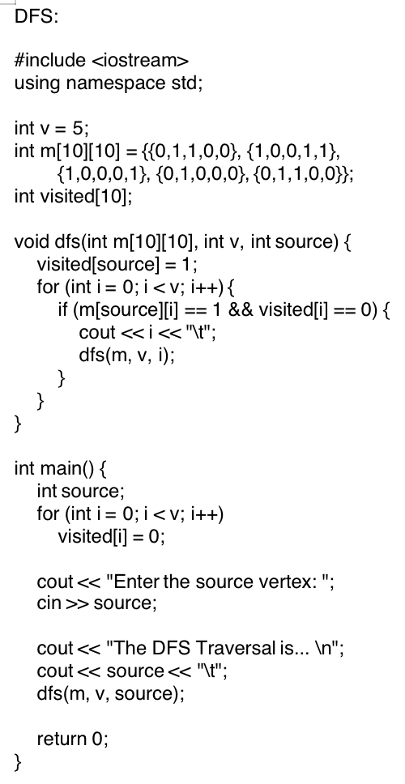
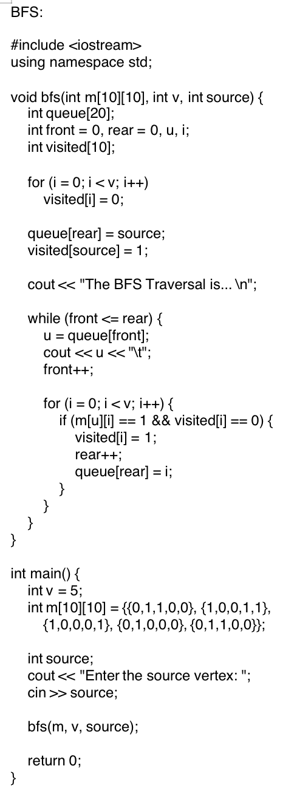
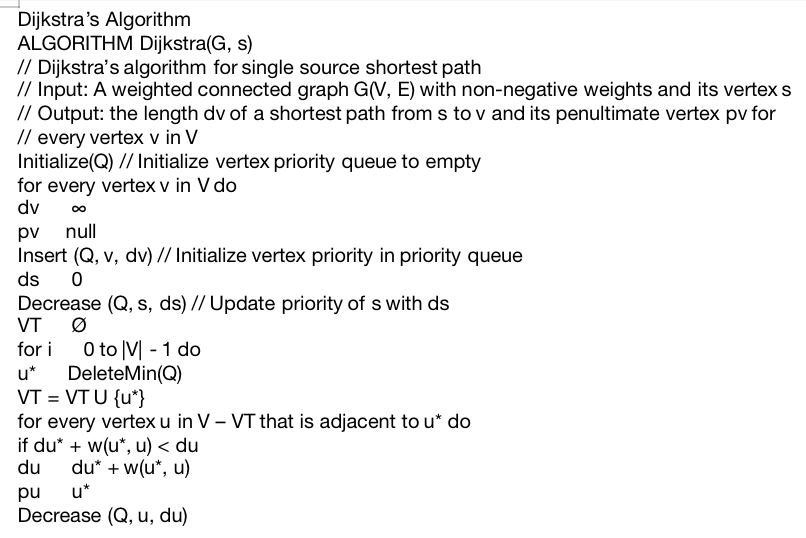
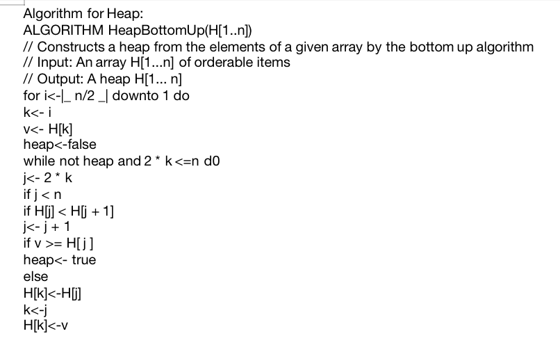
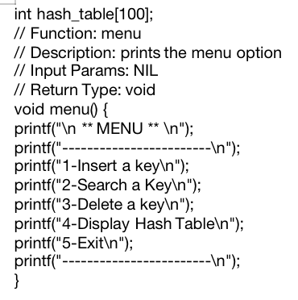
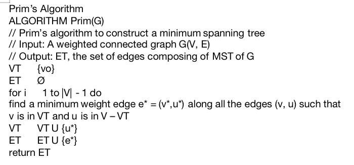
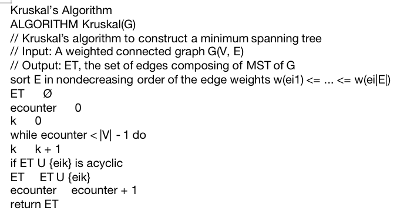

Course Learning Reflections
Algorithm Implementation Details
The algorithms used in our project range from graph-based algorithms like Dijkstra’s and Prim’s for optimizing transportation and distribution, to dynamic programming and segment trees for efficient data querying and management.
1. Business Case 1:Mixing fields of different crops
Description: Same type of crops are being grown on different lands far away which creates problems during harvest.
Probable Tools: Graph (BFS/DFS), Dijkstra's Algorithm
DFS:
BFS:
Dijkstra's Algorithm:

2. Business Case 2:Excessive wastage of water during irrigation
Description: Unequal amount of water going to all the fields due to which some crops get more water and some less, hampering production.
Probable Tools: Segment Trees, Fenwick Trees
Fenwick Tree:

Heap Sort:
Dijkstra's Algorithm:
3. Business Case 3:No proper disposal of weeds
Description: Due to no proper disposal of weeds, they tend to grow again causing damage and more work for removal.
Probable Tools: Hashing, Traveling Salesman Problem (TSP) or Prim's Algorithm
Hashing:
Prim's Algorithm:

4. Business Case 4:Unorganized distribution of harvested products
Description: When the crops are produced and further sent to the city for sale, some parts of the city receive more crops, and others less, failing to meet demand.
Probable Tools: Heap, Dijkstra's Algorithm
Heap:
Dijkstra's Algorithm:
5. Business Case 5:Excessive use of pesticides and insecticides
Description: Unwanted amounts of pesticides and insecticides are being used on crops, altering food quality and increasing health risks.
Probable Tools: Sparse Tables
~Sparse table
6. Business Case 6:Transportation in agricultural area
Description: No proper system for transportation in fields and inadequate interconnection between fields.
Probable Tools: Kruskal's, Prim's Algorithm
Kruskal's Algorithm:
Prim's Algorithm:
Implementation
#include iostream
#include vector
#include cmath
#include fstream
#include limits
#include iomanip
#include cstdlib
#include ctime
#include map
using namespace std;
#define MAX_FIELDS 100
#define MAX_CONNECTIONS 100
vector tree;
vector lazy;
const float REgrowth_THRESHOLD = 0.5;
struct Environment {
float moisture;
float temperature;
};
map regrowthHistory;
typedef pair Edge;
void checkThresholdAlert(const vector& pesticide_usage, int threshold);
double calculateAverage(const vector& pesticide_usage);
double calculateStdDev(const vector& pesticide_usage, double avg);
string detectTrend(const vector& pesticide_usage);
void exportToCSV(const vector& pesticide_usage) ;
void buildSparseTable(const vector& arr, vector >& st, vector& log);
int query(int L, int R, const vector >& st, const vector& log);
int query(int L, int R, const vector >& st, const vector& log);
void displayHistogram(const vector& pesticide_usage);
void inputPesticideUsage(vector& pesticide_usage);
void addEdge(string fields[], double distances[MAX_FIELDS][MAX_FIELDS], int u, int v, double weight) ;
void findClusters(int n, string fields[], double distances[MAX_FIELDS][MAX_FIELDS], bool visited[], int clusters[MAX_FIELDS]);
void dijkstra(int n, double distances[MAX_FIELDS][MAX_FIELDS], int start, string fields[]) ;
void buildTree(vector& water, int start, int end, int node);
void updateRangeLazy(int start, int end, int l, int r, int value, int node) ;
int queryRangeLazy(int start, int end, int l, int r, int node);
void updateRange(int l, int r, int value);
int queryRange(int l, int r) ;
void checkThresholdAlert(const vector& pesticide_usage, int threshold) {
for (int i = 0; i < pesticide_usage.size(); ++i) {
if (pesticide_usage[i] > threshold) {
cout << "Alert: Excessive pesticide usage in region " << (i + 1) << ": " << pesticide_usage[i] << endl;
}
}
}
double calculateAverage(const vector& pesticide_usage) {
int sum = 0;
for (int i = 0; i < pesticide_usage.size(); ++i) {
sum += pesticide_usage[i];
}
return static_cast(sum) / pesticide_usage.size();
}
double calculateStdDev(const vector& pesticide_usage, double avg) {
double variance = 0;
for (int i = 0; i < pesticide_usage.size(); ++i) {
variance += pow(pesticide_usage[i] - avg, 2);
}
return sqrt(variance / pesticide_usage.size());
}
string detectTrend(const vector& pesticide_usage) {
int count_increase = 0;
int count_decrease = 0;
for (size_t i = 1; i < pesticide_usage.size(); ++i) {
if (pesticide_usage[i] > pesticide_usage[i - 1]) {
count_increase++;
} else if (pesticide_usage[i] < pesticide_usage[i - 1]) {
count_decrease++;
}
}
if (count_increase > count_decrease) {
return "Increasing usage trend detected";
} else if (count_decrease > count_increase) {
return "Decreasing usage trend detected";
} else {
return "No significant trend detected";
}
}
void exportToCSV(const vector& pesticide_usage) {
ofstream file("pesticide_usage.csv");
if (file.is_open()) {
file << "Region,Pesticide Usage\n";
for (int i = 0; i < pesticide_usage.size(); ++i) {
file << (i + 1) << "," << pesticide_usage[i] << "\n";
}
cout << "Data exported to pesticide_usage.csv" << endl;
file.close();
} else {
cout << "Unable to open file for export." << endl;
}
}
void buildSparseTable(const vector& arr, vector >& st, vector& log) {
int n = arr.size();
log[1] = 0;
for (int i = 2; i <= n; ++i) {
log[i] = log[i / 2] + 1;
}
for (int i = 0; i < n; ++i) {
st[i][0] = arr[i];
}
for (int j = 1; (1 << j) <= n; ++j) {
for (int i = 0; i + (1 << j) - 1 < n; ++i) {
st[i][j] = min(st[i][j - 1], st[i + (1 << (j - 1))][j - 1]);
}
}
}
int query(int L, int R, const vector >& st, const vector& log) {
int length = R - L + 1;
int j = log[length];
return min(st[L][j], st[R - (1 << j) + 1][j]);
}
void displayHistogram(const vector& pesticide_usage) {
cout << "\nPesticide Usage (Histogram View):\n";
for (int i = 0; i < pesticide_usage.size(); ++i) {
cout << "Region " << (i + 1) << ": ";
for (int j = 0; j < pesticide_usage[i]; ++j) {
cout << "*";
}
cout << " (" << pesticide_usage[i] << ")\n";
}
}
void inputPesticideUsage(vector& pesticide_usage) {
int n;
cout << "Enter the number of regions: ";
cin >> n;
pesticide_usage.resize(n);
cout << "Enter the pesticide usage for each region:\n";
for (int i = 0; i < n; ++i) {
cout << "Region " << (i + 1) << ": ";
cin >> pesticide_usage[i];
}
}
void addEdge(string fields[], double distances[MAX_FIELDS][MAX_FIELDS], int u, int v, double weight) {
distances[u][v] = weight;
distances[v][u] = weight;
}
void findClusters(int n, string fields[], double distances[MAX_FIELDS][MAX_FIELDS], bool visited[], int clusters[MAX_FIELDS]) {
int clusterId = 0;
for (int i = 0; i < n; i++) {
if (!visited[i]) {
clusters[i] = clusterId;
visited[i] = true;
for (int j = 0; j < n; j++) {
if (distances[i][j] > 0 && !visited[j]) {
visited[j] = true;
clusters[j] = clusterId;
}
}
clusterId++;
}
}
}
void dijkstra(int n, double distances[MAX_FIELDS][MAX_FIELDS], int start, string fields[]) {
double dist[MAX_FIELDS];
bool visited[MAX_FIELDS] = {false};
for (int i = 0; i < n; i++) {
dist[i] = numeric_limits::infinity();
}
dist[start] = 0;
for (int i = 0; i < n; i++) {
int u = -1;
double minDist = numeric_limits::infinity();
for (int j = 0; j < n; j++) {
if (!visited[j] && dist[j] < minDist) {
minDist = dist[j];
u = j;
}
}
if (u == -1) break;
visited[u] = true;
for (int v = 0; v < n; v++) {
if (distances[u][v] > 0) {
double newDist = dist[u] + distances[u][v];
if (newDist < dist[v]) {
dist[v] = newDist;
}
}
}
}
cout << "\nShortest paths from " << fields[start] << ":" << endl;
for (int i = 0; i < n; i++) {
if (dist[i] == numeric_limits::infinity()) {
cout << " To " << fields[i] << ": No direct path." << endl;
} else {
cout << " To " << fields[i] << ": " << fixed << setprecision(2) << dist[i] << " units" << endl;
}
}
cout << endl;
}
int n;
void buildTree(vector& arr, int start, int end, int node) {
if (start == end) {
tree[node] = arr[start];
} else {
int mid = (start + end) / 2;
buildTree(arr, start, mid, 2 * node + 1);
buildTree(arr, mid + 1, end, 2 * node + 2);
tree[node] = tree[2 * node + 1] + tree[2 * node + 2];
}
}
void updateRangeUtil(int start, int end, int l, int r, int value, int node) {
if (lazy[node] != 0) {
tree[node] += (end - start + 1) * lazy[node];
if (start != end) {
lazy[2 * node + 1] += lazy[node];
lazy[2 * node + 2] += lazy[node];
}
lazy[node] = 0;
}
if (start > end || start > r || end < l) {
return;
}
if (start >= l && end <= r) {
tree[node] += (end - start + 1) * value;
if (start != end) {
lazy[2 * node + 1] += value;
lazy[2 * node + 2] += value;
}
return;
}
int mid = (start + end) / 2;
updateRangeUtil(start, mid, l, r, value, 2 * node + 1);
updateRangeUtil(mid + 1, end, l, r, value, 2 * node + 2);
tree[node] = tree[2 * node + 1] + tree[2 * node + 2];
}
void updateRange(int l, int r, int value) {
updateRangeUtil(0, lazy.size() / 4 - 1, l, r, value, 0);
}
int queryRangeUtil(int start, int end, int l, int r, int node) {
if (start > end || start > r || end < l) {
return 0;
}
if (lazy[node] != 0) {
tree[node] += (end - start + 1) * lazy[node];
if (start != end) {
lazy[2 * node + 1] += lazy[node];
lazy[2 * node + 2] += lazy[node];
}
lazy[node] = 0;
}
if (start >= l && end <= r) {
return tree[node];
}
int mid = (start + end) / 2;
int left = queryRangeUtil(start, mid, l, r, 2 * node + 1);
int right = queryRangeUtil(mid + 1, end, l, r, 2 * node + 2);
return left + right;
}
int queryRange(int l, int r) {
return queryRangeUtil(0, lazy.size() / 4 - 1, l, r, 0);
}
void simulateRegrowth(int location, int timeSinceClearance) {
float regrowthProbability = (timeSinceClearance / 10.0f) * (static_cast(rand()) / RAND_MAX);
if (regrowthProbability > REgrowth_THRESHOLD) {
cout << "Regrowth detected at location " << location << ". Re-clearing required.\n";
regrowthHistory[location]++;
}
}
void detectPotentialRegrowth(int location, Environment env) {
if (env.moisture > 50.0f && env.temperature > 20.0f) {
cout << "Potential regrowth likely at location " << location
<< " due to moisture: " << env.moisture
<< "% and temperature: " << env.temperature << "°C\n";
if (regrowthHistory.find(location) == regrowthHistory.end()) {
regrowthHistory[location] = 0;
}
regrowthHistory[location]++;
}
}
void dynamicRegrowthCheck(int location) {
if (rand() % 100 < 30) {
cout << "Regrowth detected at location " << location << " during traversal.\n";
regrowthHistory[location]++;
}
}
void simulateWeedClearing(vector route, int timeSinceClearance[], Environment env[]) {
for (int i = 0; i < route.size(); i++) {
int location = route[i];
cout << "Clearing weeds at location " << location << endl;
detectPotentialRegrowth(location, env[location]);
dynamicRegrowthCheck(location);
simulateRegrowth(location, timeSinceClearance[location]);
cout << endl;
}
}
void displayRegrowthHistory() {
cout << "Predicting future regrowth based on history:\n";
for (map::iterator it = regrowthHistory.begin(); it != regrowthHistory.end(); ++it) {
if (it->second > 0) {
cout << "Location " << it->first << " is prone to regrowth. Prioritize it.\n";
}
}
}
int main() {
int n;
while(1) {
cout << "Business case 1: Pesticide Usage Analysis\n";
cout << "Business case 2: Crop Field Network\n";
cout << "Business case 3: Water usage Analysis\n";
cout << "Business case 4: Weeds Disposal Analysis\n";
cout << "Enter your choice: ";
cin >> n;
switch(n) {
case 1: {
vector pesticide_usage;
inputPesticideUsage(pesticide_usage);
int threshold;
cout << "Enter the threshold value for excessive pesticide usage: ";
cin >> threshold;
int n = pesticide_usage.size();
int max_log = log2(n) + 1;
vector > st(n, vector(max_log));
vector log(n + 1);
buildSparseTable(pesticide_usage, st, log);
while (true) {
cout << "\nMenu:\n";
cout << "1. Query Minimum Pesticide Usage in Range\n";
cout << "2. View Pesticide Usage Data\n";
cout << "3. View Sparse Table\n";
cout << "4. View Histogram\n";
cout << "5. View Average Pesticide Usage\n";
cout << "6. Check Threshold Alerts\n";
cout << "7. View Trend Analysis\n";
cout << "8. Export Data to CSV\n";
cout << "9. Exit\n";
cout << "Enter your choice: ";
int choice;
cin >> choice;
if (choice == 1) {
int num_queries;
cout << "Enter the number of queries: ";
cin >> num_queries;
for (int i = 0; i < num_queries; ++i) {
int L, R;
cout << "Enter the start index (L) for query " << (i + 1) << ": ";
cin >> L;
cout << "Enter the end index (R) for query " << (i + 1) << ": ";
cin >> R;
if (L < 0 || R >= n || L > R) {
cout << "Invalid range. Please enter again.\n";
--i;
continue;
}
cout << "Minimum pesticide usage between region " << (L + 1) << " and " << (R + 1) << ": "
<< query(L, R, st, log) << endl;
}
}
else if (choice == 2) {
cout << "\nPesticide Usage Data:\n";
for (int i = 0; i < pesticide_usage.size(); ++i) {
cout << "Region " << (i + 1) << ": " << pesticide_usage[i] << endl;
}
}
else if (choice == 3) {
cout << "\nSparse Table:\n";
for (int i = 0; i < st.size(); ++i) {
for (int j = 0; j < st[i].size(); ++j) {
cout << st[i][j] << " ";
}
cout << endl;
}
}
else if (choice == 4) {
displayHistogram(pesticide_usage);
}
else if (choice == 5) {
double avg = calculateAverage(pesticide_usage);
cout << "Average pesticide usage: " << avg << endl;
}
else if (choice == 6) {
checkThresholdAlert(pesticide_usage, threshold);
}
else if (choice == 7) {
cout << detectTrend(pesticide_usage) << endl;
}
else if (choice == 8) {
exportToCSV(pesticide_usage);
}
else if (choice == 9) {
cout << "Exiting the program. Goodbye!\n";
break;
}
else {
cout << "Invalid choice. Please try again.\n";
}
}
break;
}
case 2: {
string crops[] = {"Wheat", "Rice", "Corn", "Soybean", "Barley"};
int numCrops = 5;
cout << "Welcome to the Crop Field Network!" << endl;
cout << "Here are the available crop types:" << endl;
for (int i = 0; i < numCrops; ++i) {
cout << i + 1 << ". " << crops[i] << endl;
}
int n;
cout << "\nHow many fields do you have? ";
cin >> n;
string fields[MAX_FIELDS];
string cropType[MAX_FIELDS];
for (int i = 0; i < n; ++i) {
cout << "\nField " << i + 1 << ":\n";
cout << "Enter field name: ";
cin >> fields[i];
int cropChoice;
cout << "Which crop does this field have? (Select a number) ";
cin >> cropChoice;
if (cropChoice < 1 || cropChoice > numCrops) {
cout << "Oops, that was an invalid choice! Please try again." << endl;
--i;
continue;
}
cropType[i] = crops[cropChoice - 1];
}
double distances[MAX_FIELDS][MAX_FIELDS] = {0};
int edges;
cout << "\nHow many connections between fields would you like to enter? ";
cin >> edges;
for (int i = 0; i < edges; ++i) {
string u, v;
double distance;
cout << "\nEnter connection " << i + 1 << " details:\n";
cout << "Field 1: ";
cin >> u;
cout << "Field 2: ";
cin >> v;
cout << "Distance (in units): ";
cin >> distance;
int uIndex = -1, vIndex = -1;
for (int i = 0; i < n; ++i) {
if (fields[i] == u) uIndex = i;
if (fields[i] == v) vIndex = i;
}
if (uIndex == -1 || vIndex == -1 || cropType[uIndex] != cropType[vIndex]) {
cout << "Can't connect these fields, they have different crops!" << endl;
continue;
}
addEdge(fields, distances, uIndex, vIndex, distance);
}
bool visited[MAX_FIELDS] = {false};
int clusters[MAX_FIELDS] = {-1};
findClusters(n, fields, distances, visited, clusters);
cout << "\nHere are the clusters of fields:" << endl;
for (int i = 0; i < n; i++) {
cout << fields[i] << " is in Cluster " << clusters[i] << endl;
}
for (int i = 0; i < n; i++) {
dijkstra(n, distances, i, fields);
}
cout << "Thank you for using the Crop Field Network!" << endl;
break;
}
default:
cout << "Invalid option! Please try again.\n";
case 3:
{
cout << "Enter the number of fields: ";
cin >> n;
vector water(n);
cout << "Enter the initial water requirements for each field (in liters):\n";
for (int i = 0; i < n; ++i) {
cin >> water[i];
}
tree.resize(4 * n, 0);
lazy.resize(4 * n, 0);
buildTree(water, 0, n - 1, 0);
while (true) {
cout << "\nMenu:\n";
cout << "1. Update water requirement for a range of fields\n";
cout << "2. Query total water requirement for a range of fields\n";
cout << "3. Exit\n";
cout << "Enter your choice: ";
int choice;
cin >> choice;
if (choice == 1) {
int l, r, value;
cout << "Enter the range (0-indexed) and value to add: ";
cin >> l >> r >> value;
updateRange(l, r, value);
} else if (choice == 2) {
int l, r;
cout << "Enter the range (0-indexed): ";
cin >> l >> r;
cout << "Total water requirement: " << queryRange(l, r) << " liters\n";
} else if (choice == 3) {
break;
} else {
cout << "Invalid choice. Try again.\n";
}
}
}
case 4:
{
srand(static_cast(time(0)));
int numLocations;
cout << "Enter the total number of locations: ";
cin >> numLocations;
cout << "The available locations are: ";
for (int i = 0; i < numLocations; i++) {
cout << i << " ";
}
cout << endl;
int numToClear;
cout << "Enter the number of locations you want to clear: ";
cin >> numToClear;
vector weedClearingRoute(numToClear);
cout << "Enter the locations to clear weeds (e.g., 0 1 2 3): ";
for (int i = 0; i < numToClear; i++) {
cin >> weedClearingRoute[i];
}
int timeSinceClearance[numLocations];
for (int i = 0; i < numLocations; i++) {
cout << "Enter time since last clearance for location " << i << ": ";
cin >> timeSinceClearance[i];
}
Environment env[numLocations];
for (int i = 0; i < numLocations; i++) {
cout << "Enter moisture level (0-100) for location " << i << ": ";
cin >> env[i].moisture;
cout << "Enter temperature (in Celsius) for location " << i << ": ";
cin >> env[i].temperature;
}
cout << "\nWeed clearing sequence: ";
for (int i = 0; i < weedClearingRoute.size(); i++) {
cout << weedClearingRoute[i] << " ";
}
cout << endl;
simulateWeedClearing(weedClearingRoute, timeSinceClearance, env);
displayRegrowthHistory();
}
}
}
return 0;
}
Thank you!
Sushmita Shanbhag: "https://sushmita-shanbhag17.github.io/portfolio.github.io/#COURSE_PROJECT" target="_blank" rel="noopener noreferrer"
Bhavana Sherekar: https://bhavanasherekar.github.io/portfolio2.github.io/
Srishti Manvi: https://srishti30092004.github.io/DAA.github.io/